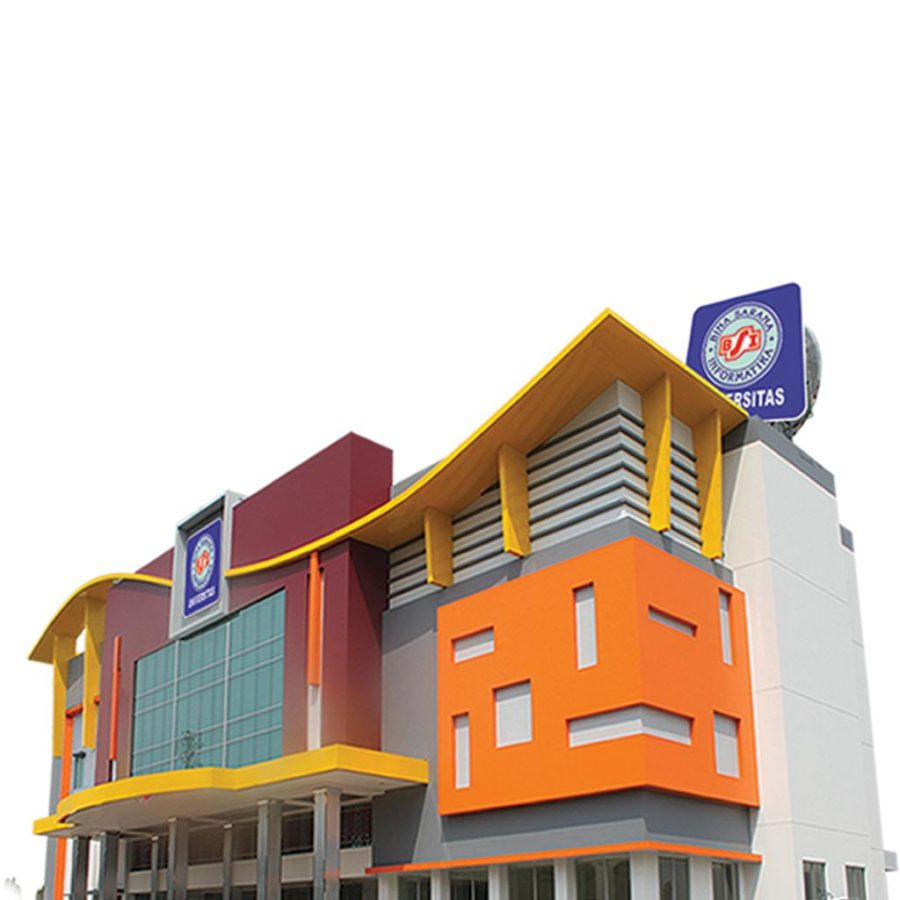

VISI DAN MISI Universitas Sukses Jaya
VISI
Menjadi universitas unggul di bidang ekonomi kreatif pada tahun 2033.
MISI
- Menyelenggarakan program pendidikan akademik dan vokasi yang mendukung ekonomi kreatif.
- Menyelenggarakan penelitian berkualitas.
- Menyelenggarakan pengabdian masyarakat dalam rangka meningkatkan kualitas sumber daya manusia.
- Mengelola universitas secara mandiri dengan tata kelola yang baik melalui pengembangan kelembagaan yang berorientasi pada mutu.
- Memperluas jejaring kerjasama dengan pemerintah, dunia industry dan usaha baik di dalam negeri dan luar negeri.
TUJUAN
- Menghasilkan lulusan yang memiliki kemampuan dalam mengembangkan, mengimplementasikan dan menyebarkan teknologi di bidang ekonomi kreatif
- Menghasilkan lulusan yang berkompeten, kreatif, inovatif, kompetitif dan berakhlak mulia
- Menghasilkan penelitian dan karya ilmiah yang diakui pada tingkat nasional dan internasional
- Terwujudnya kegiatan pengabdian dan pemberdayaan masyarakat yang mendorong pengembangan potensi sumber daya manusia untuk mewujudkan kesejahteraan masyarakat.
- Menghasilkan suasana akademik yang mendukung bakat, minat, dan kreativitas dalam rangka menunjang pengembangan ekonomi kreatif.
- Terwujudnya kerjasama dengan pemerintah, dunia industry dan usaha baik di dalam negeri dan luar negeri